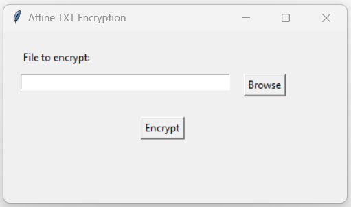

Unit 8: Artefacts
Collaborative Discussion 2: Cryptography case study: TrueCrypt
Part of this unit's discussion was to explain whether we think that the cryptanalysis proved or disproved the assumption that TrueCrypt is not secure.

Python Cryptography Program
Task: Create a Python program that can take a text file and output an encrypted version as a file in your folder. Answer the following questions:
- Why did you select the algorithm you chose?
- Would it meet the GDPR regulations? Justify your answer.
When I first set out to complete this task, I gravitated towards using the “Affine” cypher to encrypt the contents of my “.txt” file, as it appeared generally more secure than a simple “Ceasar” cypher due to added complexity. The first version of my code, which worked as intended, used said cypher. However, once I delved into further research about cyphers, I stumbled across the “cryptography” library for Python. I had already encountered this library before, as I used it for the initial prototyping of the encryption functionality for my team’s coding assignment. Furthermore, many articles I read about the “Affine” cypher tended to introduce other elements to make the “Affine” cypher more secure, such as combining the “Ceasar” and “Affine” cypher (Wulandari, 2020), never just using the “Affine” cypher on its own.
Affine Cypher Program Screenshots
I'm a big fan of graphical user interfaces, which is why I decided to put in a little bit of time to create a simple GUI using the tkinter library in Python. As you can see above, the application allows the user to either past the path to their file, or browse directly to it by pressing the 'Browse' button. The application will only show '.txt' files.
Once the user has selected the desired file, they can hit 'Encrypt'. If the encryption was successful, the user will get the following popup:
Currently, the program is configured to create the encrypted file in the same directory as the original file and name it 'encrypted.txt'. In my example, the program did the following:
As mentioned before, I then decided to look into the cryptography library instead of using 'Affine' cypher. The cryptography library uses “AES” encryption, which is currently seen as one of the most secure and widely used forms of encryption (Abdul Hussien et al., 2021), with no known vulnerabilities yet. Due to this added security, I rewrote my application using the cryptography library instead. Compared to the previous encrypted output, this is what I get now:

Regarding compliance with GDPR, I would want to note the following. Both applications are compliant to a certain extent because they do not store or transmit user data internally. Whenever user data is written to the new “.txt” file, it is done using some form of encryption. Secondly, in both instances, the user has to specifically browse to the location of the file, select the file, and then click on the “Encrypt” button in order for the application to gain access to said data. By going through this process, the user gives their implicit consent for the application to access their data. It might be a good idea to add a mechanism to these applications where the user is asked explicitly for their consent by informing them about what will happen to their data once the application accesses it. This would also allow me to inform the user that the application does not store any data internally.
In addition to what I’ve mentioned above, I would also like to mention that the “Affine” cypher is not considered very secure, making that version of the program non-compliant (GDPR, 2020).
References
Wulandari, S. Y. (2020) Cryptography: A Combination of Caesar and Affine Cipher to Conceal the Message. Proceedings International Conference on Science and Engineering 3: 741-744. Available from: https://ejournal.uin-suka.ac.id/saintek/icse/article/download/2893/2255 [Accessed 20 June 2023].
Abdul Hussein, F. T., Rahma, A. M. S. & Abdul Wahab, H. B. (2021) A Secure Environment Using a New Lightweight AES Encryption Algorithm for E-Commerce Websites. Security and Communication Networks 2021: 1-15. Available from: https://downloads.hindawi.com/journals/scn/2021/9961172.pdf [Accessed 20 June 2023].
GDPR (2020) GDPR checklist for data controllers. Available from: https://gdpr.eu/checklist/ [Accessed 20 June 2023].